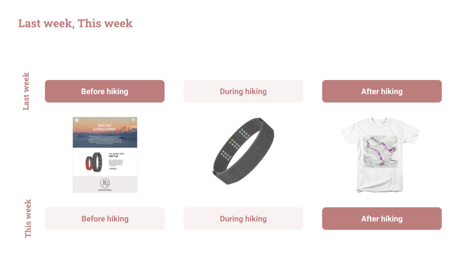
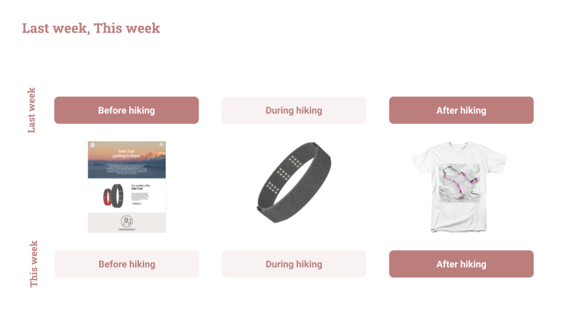

In week four of Designing Interactions I changed teams to evaluate SafeTrail, a data communication and visualization tool created by another team during the first part of the course. SafeTrail began as a data tracking wristband that hikers would wear during strenuous treks. The device records and relays vital data (heart rate, emotional status, etc.) to the guide so they can monitor and adjust the trek to the needs of the hikers. After the hike, participants could order a custom memorabilia item featuring a visualization of their data. The team decided to focus on this customized visualization of adventure data.
Our first task as the evaluation team was constructing a plan for the following three weeks. We split our research plan into qualitative and quantitative methods to better organize our activities. The quantitative team built a questionnaire with the goal of reaching 30+ active people and gaining insights into general feelings about data visualization and memorabilia. The qualitative team planned an interview script including an activity with the Figma prototype and booked times with five participants of various demographics and sports levels.
The interviews were conducted remotely using Zoom and Figma with one person acting as the interviewer and two people taking notes. After the interviews, we gathered all relevant data onto a prepared Miro board along with the data from the questionnaire. This data will be used to do an Affinity Mapping exercise with the whole team to pull out themes and insights. These discoveries will then be presented in a report at the end of the class.
My Role: For SafeTrail, I developed the questionnaire for our quantitative evaluation, took the lead in the interview evaluations, and synthesized the data from our quantitative questionnaire. I was actively involved in all aspects of evaluation, including Affinity Mapping.
This project was evaluated by a team of seven students during the second half of Designing Interactions with Antti Salovaara and Andrés Lucero for Aalto University in Spring 2021.
 
